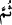
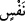
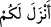
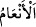
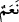
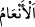

çekinen ve Rabbinin rahmetini dileyen kimse (o inkârcı gibi) midir? (Rasûlüm!) De
ki: Hiç bilenlerle bilmeyenler bir olur mu? Doğrusu ancak akıl sâhipleri bunları
hakkıyla düşünür.
Ey bütün insanlar! “Allah sizi bir tek nefisten” Âdem (a.s.)’ın nefsinden “yarattı,
sonra ondan da” o bir tek nefis cinsinden ya da böğrün yakınındaki kaburga kemiğinden
ve kaburga kemiklerinin en sonuncusundan, onun sol eğe kemiğinden “eşini” Havvâ
(a.s.)’ı “yarattı.”
“__WORD__ (sonra)” lafzı, “__WORD__ kelimesinin sıfatı olan hazfedilmiş bir ifâdeye atfedilmiştir.
Yâni, yarattığı bir tek nefisten sonra, ondan eşini yarattı ve böylece o nefsi çift hâle
getirdi, demektir. Çünkü âyetin zâhiri, Hz. Havvâ’nın yaratılmasının Hz. Âdem’in
zürriyyetinin yaratılmasından sonra olduğunu ifâde etmektedir. Halbuki böyle değildir.
Burada Allah Teâlâ’nın insanı bir tek nefisten, yâni ruhtan yarattığına, o nefisten de
onun eşi olan kalbi yarattığına işâret vardır. Havvâ Âdem (a.s.)’ın kaburga kemiğinden
yaratıldığı gibi, kalb de ruhtan yaratılmıştır. Mutlak olarak böyle bir yaratma tek olarak
Allah Teâlâ’ya mahsustur. Dolayısıyla O’nun tanınması (mârifet) ve ortak koşmaksızın
O’na ibâdet edilmesi gerekir.
“Sizin için” dört ayaklı “hayvanlardan” deve, sığır, koyun ve keçiden erkek ve dişi
olarak “sekiz eş meydana getirdi.”
“__WORD__ (sizin için indirdi)”, yâni sizin için hüküm veya taksim etti, demektir. Çünkü,
Allah Teâlâ’nın hüküm ve taksimleri, levh-i mahfuzda yazılması bakımından gökten
inmekle vasfedilir. Ya da yağmurlar ve yıldızların ışıkları gibi gökten inen birtakım
sebepler sâyesinde sizin için ihdas edip yarattı demektir. Bu, “Size giysi indirdik” (el-
A’râf, 7/26) ifâdesine benzer. Halbuki giysinin kendisi indirilmemiştir. Fakat indirilen,
pamuk ve yünün sebebi olan yağmurdur. Giysi de pamuk ve yünden imal edilir.
“__WORD__ kelimesi “__WORD__ın çoğuludur. Aslında deve sürüsü demektir. Kendi lafzından
müfredi yoktur.
Şeyhzâde Mâide sûresinin baş tarafında şöyle der: “__WORD__ kelimesi, dört cins
hayvana mahsustur. Bunlar deve, sığır, koyun ve keçidir. Bunlara sekiz çift denir. Çünkü,
bu cinslerden herbirinin erkeği dişisi ile birlikte bir çift; dişisi de erkeği ile bir çift
meydana getirir. Böylece koyun, keçi, deve ve sığırdan iki hayvan, çift olması îtibâriyle
toplam sekiz olur. At, eşek ve katır “__WORD__a dâhil değildir.”
Bahru’l-ulûm’da der ki: “Bir olan şey (vâhid), tek başına bulunduğu zaman ona
“ferd” denir. Onunla birlikte kendi cinsinden başkası da bulunduğu takdirde herbirine
“zevc/çift”, ikisine ise zevceyn/karı-koca denir. Şu âyet buna delildir: “İki çifti, erkek
ve dişiyi yarattı” (en-Necm, 53/45). Hesap âlimlerine göre dört ve sekizin üç ve
yedinin tersi olması gibi “zevc/çift” kelimesi de “ferd”in tersidir. Özellikle bu dört cins